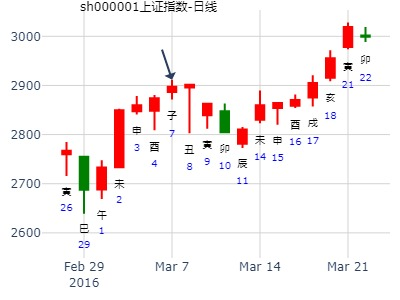
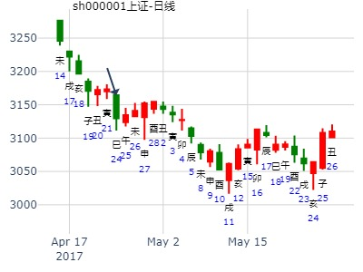
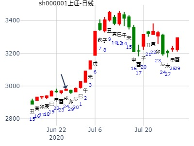

2012年元月9-13日大盘涨跌卦
占事：2012年元月9-13日大盘涨跌？
公历起卦时间：2012年1月6日15时36分 (手工指定)
干支：辛卯年 辛丑月 丙寅日 丙申时 （日空：戌亥）
乾宫：火天大有 (归魂) 乾宫：火天大有 (归魂)
六神 伏神 本 卦 变 卦
青龙 官鬼己巳火 ▅▅▅▅▅ 应 官鬼己巳火 ▅▅▅▅▅ 应
玄武 父母己未土 ▅▅ ▅▅ 父母己未土 ▅▅ ▅▅
白虎 兄弟己酉金 ▅▅▅▅▅ 兄弟己酉金 ▅▅▅▅▅
腾蛇 父母甲辰土 ▅▅▅▅▅ 世 父母甲辰土 ▅▅▅▅▅ 世
勾陈 妻财甲寅木 ▅▅▅▅▅ 妻财甲寅木 ▅▅▅▅▅
朱雀 子孙甲子水 ▅▅▅▅▅ 子孙甲子水 ▅▅▅▅▅
占事：1月份大盘涨跌？
公历起卦时间：2016年1月4日12时8分 (阿晖在线摇卦)
干支：乙未年 戊子月 乙酉日 壬午时 （日空：午未）
乾宫：火天大有 (归魂) 乾宫：火天大有 (归魂)
六神 伏神 本 卦 变 卦
玄武 官鬼己巳火 ▅▅▅▅▅ 应
白虎 父母己未土 ▅▅ ▅▅
腾蛇 兄弟己酉金 ▅▅▅▅▅
勾陈 父母甲辰土 ▅▅▅▅▅ 世
朱雀 妻财甲寅木 ▅▅▅▅▅
青龙 子孙甲子水 ▅▅▅▅▅
上证1月11-15日——乾隆币卦 红牛
上证指数下周走势
公历时间：2016年1月8日15时31分
干 支：乙未年 己丑月 己丑日 壬申时
旬 空：辰巳 午未 (午未) 戌亥
乾宫：火天大有（归魂）
勾陈 ▄▄▄▄▄ 官鬼己巳火 应
朱雀 ▄▄ ▄▄ 父母己未土
青龙 ▄▄▄▄▄ 兄弟己酉金
玄武 ▄▄▄▄▄ 父母甲辰土 世
白虎 ▄▄▄▄▄ 妻财甲寅木
螣蛇 ▄▄▄▄▄ 子孙甲子水
今天大盘走势2019-01-21
公历起卦时间：2019年1月21日1时10分 (真实铜钱摇卦)
干支：戊戌年 乙丑月 戊午日 癸丑时 （日空：子丑）
乾宫：火天大有 (归魂)
六神 伏神 本 卦
朱雀 官鬼己巳火 ▅▅▅▅▅ 应
青龙 父母己未土 ▅▅ ▅▅
玄武 兄弟己酉金 ▅▅▅▅▅
白虎 父母甲辰土 ▅▅▅▅▅ 世
腾蛇 妻财甲寅木 ▅▅▅▅▅
勾陈 子孙甲子水 ▅▅▅▅▅
子孙暗动。
主帖标题: 手摇 银行板块 2021年1月
公历：2021年1月2日19时45分，星期六。
干支：庚子年 戊子月 庚戌日 丙戌时 (卦身：寅)
主变卦 火天大有(乾宫-归魂) [空亡:寅、卯]
螣蛇 ▅▅▅▅▅ 官鬼己巳火 应
勾陈 ▅▅ ▅▅ 父母己未土
朱雀 ▅▅▅▅▅ 兄弟己酉金
青龙 ▅▅▅▅▅ 父母甲辰土 世
玄武 ▅▅▅▅▅ 妻财甲寅木
白虎 ▅▅▅▅▅ 子孙甲子水
风生水起??占事:?盛屯矿业到下周末
起卦方式：手动摇卦?
公历时间：2015年2月26日11时4分
干支：乙未年?戊寅月癸酉日戊午时
旬空：辰巳 申酉 戌亥 子丑
乾宫：火天大有（归魂）
六神?【本 卦】
白虎 ▄▄▄▄▄ 官鬼己巳火 应
螣蛇 ▄▄ ▄▄ 父母己未土
勾陈 ▄▄▄▄▄ 兄弟己酉金
朱雀 ▄▄▄▄▄ 父母甲辰土 世
青龙 ▄▄▄▄▄ 妻财甲寅木
玄武 ▄▄▄▄▄ 子孙甲子水
寅月酉日却一路大涨？辰酉日合？
婚否： 出生年:1971 性别：女 占事：5日大盘
起卦方式：手动摇卦 丁巳日
公历时间：2016年2月4日16时15分
干 支：乙未年 己丑月 丙辰日 丙申时
旬 空：辰巳 午未 子丑 辰巳
乾宫：火天大有（归魂）
六神 【本 卦】
青龙 ▄▄▄▄▄ 官鬼己巳火 应
玄武 ▄▄ ▄▄ 父母己未土
白虎 ▄▄▄▄▄ 兄弟己酉金
螣蛇 ▄▄▄▄▄ 父母甲辰土 世
勾陈 ▄▄▄▄▄ 妻财甲寅木
朱雀 ▄▄▄▄▄ 子孙甲子水

测600513联环药业在2020.2.10-2020.2.14走势
公历起卦时间：2020年2月9日16时45分 (手工指定)
干支：庚子年 戊寅月 壬午日 戊申时 （日空：申酉）
乾宫：火天大有 (归魂)
六神 伏神 本 卦
白虎 官鬼己巳火 ▅▅▅▅▅ 应
腾蛇 父母己未土 ▅▅ ▅▅
勾陈 兄弟己酉金 ▅▅▅▅▅
朱雀 父母甲辰土 ▅▅▅▅▅ 世
青龙 妻财甲寅木 ▅▅▅▅▅
玄武 子孙甲子水 ▅▅▅▅▅
寅月午日直接见顶
2月1至2月5日大盘预测（日测）
明天周五涨跌
公历时间：2021年2月4日15时43分
干 支：辛丑年 庚寅月 癸未日 庚申时
旬 空：辰巳 午未 申酉 子丑
乾宫：火天大有（归魂）
六神 【本 卦】
白虎 ▄▄▄▄▄ 官鬼己巳火 应
螣蛇 ▄▄ ▄▄ 父母己未土
勾陈 ▄▄▄▄▄ 兄弟己酉金
朱雀 ▄▄▄▄▄ 父母甲辰土 世
青龙 ▄▄▄▄▄ 妻财甲寅木
玄武 ▄▄▄▄▄ 子孙甲子水

主帖标题: 预测下周3月7日---11日大盘走势
公历时间：2011年 3月3日 10时55分
农历时间：辛卯年 一月廿九日巳时
干支： 辛卯年 庚寅月 丁巳日 乙巳时 (旬空：子丑)
乾宫：火天大有(归魂)
六神 伏 神 【本 卦】
青龙 官鬼己巳火 ━━━ 应
玄武 父母己未土 ━ ━
白虎 兄弟己酉金 ━━━
螣蛇 父母甲辰土 ━━━ 世
勾陈 妻财甲寅木 ━━━
朱雀 子孙甲子水 ━━━

西湖散人发表于2012-3-1215:19
姓名：男占事：002378本周行情
起卦方式：手动摇卦易经股市论坛[url]www.yijingstock.com[/url]在线排盘系统
公历时间：2012年3月12日15时12分
干 支：壬辰年癸卯月壬申日戊申时
旬 空：午未辰巳(戌亥)寅卯
乾宫：火天大有（归魂）
六神【本 卦】
白虎 ▄▄▄▄▄ 官鬼己巳火 应
螣蛇 ▄▄▄▄ 父母己未土
勾陈 ▄▄▄▄▄ 兄弟己酉金
朱雀 ▄▄▄▄▄ 父母甲辰土 世
青龙 ▄▄▄▄▄ 妻财甲寅木
玄武 ▄▄▄▄▄ 子孙甲子水
元神长生，用神暗动，今天没表现啊，难道卦不准吗？
西湖散人 发表于 2012-3-12 15:19
姓名： 男 占事：002378本周行情
起卦方式：手动摇卦
时间：2012年3月12日15时12分
干支：壬辰年 癸卯月 壬申日 戊申时
旬空：午未 辰巳 (戌亥) 寅卯
乾宫：火天大有（归魂）
六神 【本 卦】
白虎 ▄▄▄▄▄ 官鬼己巳火 应
螣蛇 ▄▄ ▄▄ 父母己未土
勾陈 ▄▄▄▄▄ 兄弟己酉金
朱雀 ▄▄▄▄▄ 父母甲辰土 世
青龙 ▄▄▄▄▄ 妻财甲寅木
玄武 ▄▄▄▄▄ 子孙甲子水
元神长生，用神暗动，今天没表现啊，难道卦不准吗？
风生水起 占事: 002405今天
起卦方式：手动摇卦
公历时间：2015年3月3日7时52分
干支：乙未年 戊寅月 戊寅日 丙辰时
旬空：辰巳 申酉 申酉 子丑
乾宫：火天大有（归魂）
六神 【本 卦】
朱雀 ▄▄▄▄▄ 官鬼己巳火 应
青龙 ▄▄ ▄▄ 父母己未土
玄武 ▄▄▄▄▄ 兄弟己酉金
白虎 ▄▄▄▄▄ 父母甲辰土 世
螣蛇 ▄▄▄▄▄ 妻财甲寅木
勾陈 ▄▄▄▄▄ 子孙甲子水
跌 当天最高
出生：安 年 性别：女 占事：002540亚太科技从今天到下周五的走势
公历起卦时间：2015年3月4日14时15分 (电脑自动)
干支：乙未年 戊寅月 己卯日 辛未时 （日空：申酉）
乾宫：火天大有 (归魂) 乾宫：火天大有 (归魂)
六神 伏神 本 卦 变 卦
勾陈 官鬼己巳火 ▅▅▅▅▅ 应 官鬼己巳火 ▅▅▅▅▅ 应
朱雀 父母己未土 ▅▅ ▅▅ 父母己未土 ▅▅ ▅▅
青龙 兄弟己酉金 ▅▅▅▅▅ 兄弟己酉金 ▅▅▅▅▅
玄武 父母甲辰土 ▅▅▅▅▅ 世 父母甲辰土 ▅▅▅▅▅ 世
白虎 妻财甲寅木 ▅▅▅▅▅ 妻财甲寅木 ▅▅▅▅▅
腾蛇 子孙甲子水 ▅▅▅▅▅ 子孙甲子水 ▅▅▅▅▅
占事：601519大智慧在本月走势-安圆圆 -电脑自动
时间：2015年3月4日13点16分 星期三
干支：乙未年 戊寅月 己卯日 辛未时
神煞：华盖-未 将星-卯 劫煞-申 天医-丑 天禧-戌 桃花-子 谋星-丑
禄神-午 羊刃-巳 文昌-酉 马星-巳 灾煞-酉 贵人-子、申
寅月 己卯日（旬空：申酉）
六神 藏爻 火天大有 乾宫
勾陈 父母戌土■■■■■■官鬼巳火 应
朱雀 兄弟申金■■ ■■父母未土
青龙 官鬼午火■■■■■■兄弟酉金
玄武 ■■■■■■父母辰土 世
白虎 ■■■■■■妻财寅木
腾蛇 ■■■■■■子孙子水
【初中】和利达才(2329256605) 18:56:09
000688下周
公历时间：2015年3月6日15时37分
干 支：乙未年 己卯月 辛巳日 丙申时
旬 空：辰巳 申酉 申酉 辰巳
乾宫：火天大有（归魂）
六神 【本 卦】
螣蛇 ▄▄▄▄▄ 官鬼己巳火 应
勾陈 ▄▄ ▄▄ 父母己未土
朱雀 ▄▄▄▄▄ 兄弟己酉金
青龙 ▄▄▄▄▄ 父母甲辰土 世
玄武 ▄▄▄▄▄ 妻财甲寅木
白虎 ▄▄▄▄▄ 子孙甲子水
【初中】和利达才(2329256605) 18:16:39
000688下周
主题：山推股份在十天内的走势-乾隆通宝手摇卦 qaqahappy
丙申 庚寅 壬午 己酉 (申酉空) 丙申年正月廿三(2016/03/01 17:30:00)
火天大有
白虎 官鬼巳火 ／ 应
腾蛇 父母未土 ∥
勾陈 兄弟酉金 ／
朱雀 父母辰土 ／ 世
青龙 妻财寅木 ／
玄武 子孙子水 ／
求测人：某人，女，辛亥(1971年)，电脑摇卦(起卦方式)
占问事宜：3.7-11大盘
公历：2016年3月7日12时50分，星期一。
神煞：驿马-寅 桃花-酉 干禄-巳 贵人-丑、未
干支：丙申年 辛卯月 戊子日 戊午时 (卦身：寅)
主变卦 火天大有(乾宫-归魂) [空亡:午、未]
朱雀 ▅▅▅▅▅ 官鬼己巳火 应
青龙 ▅▅ ▅▅ 父母己未土
玄武 ▅▅▅▅▅ 兄弟己酉金
白虎 ▅▅▅▅▅ 父母甲辰土 世
螣蛇 ▅▅▅▅▅ 妻财甲寅木
勾陈 ▅▅▅▅▅ 子孙甲子水

捍卫老祖宗感通卦尊严：测2020.3.20上证收盘走势？2赛05
公历起卦时间：2020年3月19日12时28分 (电脑自动)
干支：庚子年 己卯月 辛酉日 甲午时 （日空：子丑）
神煞：驿马－亥 桃花－午 日禄－酉 贵人－寅，午
乾宫：火天大有 (归魂) 乾宫：火天大有 (归魂)
六神 伏神 本 卦 变 卦
螣蛇 官鬼己巳火 ▅▅▅▅▅ 应 官鬼己巳火 ▅▅▅▅▅ 应
勾陈 父母己未土 ▅▅ ▅▅ 父母己未土 ▅▅ ▅▅
朱雀 兄弟己酉金 ▅▅▅▅▅ 兄弟己酉金 ▅▅▅▅▅
青龙 父母甲辰土 ▅▅▅▅▅ 世 父母甲辰土 ▅▅▅▅▅ 世
玄武 妻财甲寅木 ▅▅▅▅▅ 妻财甲寅木 ▅▅▅▅▅
白虎 子孙甲子水 ▅▅▅▅▅ 子孙甲子水 ▅▅▅▅▅
主帖标题: Q江西铜业3.12收盘走势
出生：2021 年 性别：男 占事：江西铜业中午收盘走势？
公历起卦时间：2021年3月12日9时45分 (电脑自动)
干支：辛丑年 辛卯月 己未日 己巳时 （日空：子丑）
神煞：驿马－巳 桃花－子 日禄－午 贵人－子，申
乾宫：火天大有 (归魂) 乾宫：火天大有 (归魂)
六神 伏神 本 卦 变 卦
勾陈 官鬼己巳火 ▅▅▅▅▅ 应 官鬼己巳火 ▅▅▅▅▅ 应
朱雀 父母己未土 ▅▅ ▅▅ 父母己未土 ▅▅ ▅▅
青龙 兄弟己酉金 ▅▅▅▅▅ 兄弟己酉金 ▅▅▅▅▅
玄武 父母甲辰土 ▅▅▅▅▅ 世 父母甲辰土 ▅▅▅▅▅ 世
白虎 妻财甲寅木 ▅▅▅▅▅ 妻财甲寅木 ▅▅▅▅▅
螣蛇 子孙甲子水 ▅▅▅▅▅ 子孙甲子水 ▅▅▅▅▅
出生：2021 年 性别：男 占事：
3.26上证收盘走势？
公历起卦时间：2021年3月25日15时38分 (电脑自动)
干支：辛丑年 辛卯月 壬申日 戊申时 （日空：戌亥）
神煞：驿马－寅 桃花－酉 日禄－亥 贵人－卯，巳
乾宫：火天大有 (归魂) 乾宫：火天大有 (归魂)
六神 伏神 本 卦 变 卦
白虎 官鬼己巳火 ▅▅▅▅▅ 应 官鬼己巳火 ▅▅▅▅▅ 应
螣蛇 父母己未土 ▅▅ ▅▅ 父母己未土 ▅▅ ▅▅
勾陈 兄弟己酉金 ▅▅▅▅▅ 兄弟己酉金 ▅▅▅▅▅
朱雀 父母甲辰土 ▅▅▅▅▅ 世 父母甲辰土 ▅▅▅▅▅ 世
青龙 妻财甲寅木 ▅▅▅▅▅ 妻财甲寅木 ▅▅▅▅▅
玄武 子孙甲子水 ▅▅▅▅▅ 子孙甲子水 ▅▅▅▅▅

招财公主 占事：招财公主测600320未来3个月走势
公历起卦时间：2015年4月23日15时39分 (在线摇卦)
干支：乙未年 庚辰月 己巳日 壬申时 （日空：戌亥）
乾宫：火天大有 (归魂) 乾宫：火天大有 (归魂)
六神 伏神 本 卦 变 卦
勾陈 官鬼己巳火 ▅▅▅▅▅ 应 官鬼己巳火 ▅▅▅▅▅ 应
朱雀 父母己未土 ▅▅ ▅▅ 父母己未土 ▅▅ ▅▅
青龙 兄弟己酉金 ▅▅▅▅▅ 兄弟己酉金 ▅▅▅▅▅
玄武 父母甲辰土 ▅▅▅▅▅ 世 父母甲辰土 ▅▅▅▅▅ 世
白虎 妻财甲寅木 ▅▅▅▅▅ 妻财甲寅木 ▅▅▅▅▅
腾蛇 子孙甲子水 ▅▅▅▅▅ 子孙甲子水 ▅▅▅▅▅
600779水井坊三个月走势？
公历起卦时间：2017年4月12日19时30分 (在线摇卦)
干支：丁酉年 甲辰月 己巳日 甲戌时 （日空：戌亥）
乾宫：火天大有 (归魂) 乾宫：火天大有 (归魂)
六神 伏神 本 卦 变 卦
勾陈 官鬼己巳火 ▅▅▅▅▅ 应 官鬼己巳火 ▅▅▅▅▅ 应
朱雀 父母己未土 ▅▅ ▅▅ 父母己未土 ▅▅ ▅▅
青龙 兄弟己酉金 ▅▅▅▅▅ 兄弟己酉金 ▅▅▅▅▅
玄武 父母甲辰土 ▅▅▅▅▅ 世 父母甲辰土 ▅▅▅▅▅ 世
白虎 妻财甲寅木 ▅▅▅▅▅ 妻财甲寅木 ▅▅▅▅▅
腾蛇 子孙甲子水 ▅▅▅▅▅ 子孙甲子水 ▅▅▅▅▅
主帖标题: 这周股市能迅速翻火吗？
公历：2017年4月24日12时26分，星期一。
干支：丁酉年 甲辰月 辛巳日 甲午时 (卦身：寅)
主变卦 火天大有(乾宫-归魂) [空亡:申、酉]
螣蛇 ▅▅▅▅▅ 官鬼己巳火 应
勾陈 ▅▅ ▅▅ 父母己未土
朱雀 ▅▅▅▅▅ 兄弟己酉金
青龙 ▅▅▅▅▅ 父母甲辰土 世
玄武 ▅▅▅▅▅ 妻财甲寅木
白虎 ▅▅▅▅▅ 子孙甲子水

测25日-29日大盘
公历起卦时间：2022年4月21日11时5分 (电脑自动)
干支：壬寅年 甲辰月 甲辰日 庚午时 （日空：寅卯）
乾宫：火天大有 (归魂)
六神 伏神 本 卦
玄武 官鬼己巳火 ▅▅▅▅▅ 应
白虎 父母己未土 ▅▅ ▅▅
螣蛇 兄弟己酉金 ▅▅▅▅▅
勾陈 父母甲辰土 ▅▅▅▅▅ 世
朱雀 妻财甲寅木 ▅▅▅▅▅
青龙 子孙甲子水 ▅▅▅▅▅
辰月辰日子孙入墓，戌日冲墓才涨。
申酉日冲旬空寅卯也涨反而跌。
主帖标题: 4.25 大盘
公历起卦时间：2022年4月22日11时15分 (电脑自动)
干支：壬寅年 甲辰月 乙巳日 壬午时 （日空：寅卯）
乾宫：火天大有 (归魂)
六神 本 卦
玄武 官鬼己巳火 ▅▅▅▅▅ 应
白虎 父母己未土 ▅▅ ▅▅
螣蛇 兄弟己酉金 ▅▅▅▅▅
勾陈 父母甲辰土 ▅▅▅▅▅ 世
朱雀 妻财甲寅木 ▅▅▅▅▅
青龙 子孙甲子水 ▅▅▅▅▅
测4月25日大盘申日大盘
辰为空方，昨日大跌，今日巳日，生父母，跌的可能性大。
下周一为申日，妻财冲空填实，子孙相，兄弟酉金旺，综合看偏多。

东土科技5月第1-2周财运：火天大有静卦。
时间: 2016-05-02 22时16分
干支: 丙申年壬辰月甲申日 (旬空: 午未 )
大有静卦
(归魂)
玄武 ▅▅▅▅▅ 官鬼巳火 应
白虎 ▅▅ ▅▅ 父母未土
腾蛇 ▅▅▅▅▅ 兄弟酉金
勾陈 ▅▅▅▅▅ 父母辰土 世
朱雀 ▅▅▅▅▅ 妻财寅木
青龙 ▅▅▅▅▅ 子孙子水
出生：没填 年 性别：男
占事：002054同德化工明天涨跌
排卦：元亨利贞网六爻在线排盘系统 http://www.china95.net
公历起卦时间：2016年5月31日16时4分 (电脑自动)
干支：丙申年 癸巳月 癸丑日 庚申时 （日空：寅卯）
神煞：驿马－亥 桃花－午 日禄－子 贵人－卯，巳
乾宫：火天大有 (归魂) 乾宫：火天大有 (归魂)
六神 伏神 本 卦 变 卦
白虎 官鬼己巳火 ▅▅▅▅▅ 应 官鬼己巳火 ▅▅▅▅▅ 应
腾蛇 父母己未土 ▅▅ ▅▅ 父母己未土 ▅▅ ▅▅
勾陈 兄弟己酉金 ▅▅▅▅▅ 兄弟己酉金 ▅▅▅▅▅
朱雀 父母甲辰土 ▅▅▅▅▅ 世 父母甲辰土 ▅▅▅▅▅ 世
青龙 妻财甲寅木 ▅▅▅▅▅ 妻财甲寅木 ▅▅▅▅▅
玄武 子孙甲子水 ▅▅▅▅▅ 子孙甲子水 ▅▅▅▅▅
主帖标题: 2020.05.25日-29日上证指数（周测）汇总
1，李淼
占事：上证指数25到29日
公历起卦时间：2020年5月22日10时53分 (在线摇卦)
干支：庚子年 辛巳月 乙丑日 辛巳时 （日空：戌亥）
神煞：驿马－亥 桃花－午 日禄－卯 贵人－子，申
乾宫：火天大有 (归魂) 乾宫：火天大有 (归魂)
六神 伏神 本 卦 变 卦
玄武 官鬼己巳火 ▅▅▅▅▅ 应 官鬼己巳火 ▅▅▅▅▅ 应
白虎 父母己未土 ▅▅ ▅▅ 父母己未土 ▅▅ ▅▅
螣蛇 兄弟己酉金 ▅▅▅▅▅ 兄弟己酉金 ▅▅▅▅▅
勾陈 父母甲辰土 ▅▅▅▅▅ 世 父母甲辰土 ▅▅▅▅▅ 世
朱雀 妻财甲寅木 ▅▅▅▅▅ 妻财甲寅木 ▅▅▅▅▅
青龙 子孙甲子水 ▅▅▅▅▅ 子孙甲子水 ▅▅▅▅▅
父母持世,财克世,但财休囚于月日,上涨
火天大有,有大的收获,有大的行情?
今天丑日,父母未土暗动克子孙 ,今天低点?
既然是大有,那断下周行情为
周一到周五,5天 全部上涨
上证指数2021.4.30戊申五-5.6甲寅、5.7乙卯五三天哪日顶？
出生：2021 年 性别：男 占事：没填
排卦：元亨利贞网六爻在线排盘系统 https://www.china95.net
公历起卦时间：2021年5月4日11时5分 (电脑自动)
干支：辛丑年 壬辰月 壬子日 丙午时 （日空：寅卯）
乾宫：火天大有 (归魂) 乾宫：火天大有 (归魂)
六神 伏神 本 卦 变 卦
白虎 官鬼己巳火 ▅▅▅▅▅ 应 官鬼己巳火 ▅▅▅▅▅ 应
螣蛇 父母己未土 ▅▅ ▅▅ 父母己未土 ▅▅ ▅▅
勾陈 兄弟己酉金 ▅▅▅▅▅ 兄弟己酉金 ▅▅▅▅▅
朱雀 父母甲辰土 ▅▅▅▅▅ 世 父母甲辰土 ▅▅▅▅▅ 世
青龙 妻财甲寅木 ▅▅▅▅▅ 妻财甲寅木 ▅▅▅▅▅
玄武 子孙甲子水 ▅▅▅▅▅ 子孙甲子水 ▅▅▅▅▅
出生：没填 年 性别：男 占事：下周6月15日至6月19日上海大盘走势
排卦：元亨利贞网六爻在线排盘系统 http://www.china95.net
公历起卦时间：2015年6月12日9时6分 (在线摇卦)
干支：乙未年 壬午月 己未日 己巳时 （日空：子丑）
乾宫：火天大有 (归魂) 乾宫：火天大有 (归魂)
六神 伏神 本 卦 变 卦
勾陈 官鬼己巳火 ▅▅▅▅▅ 应 官鬼己巳火 ▅▅▅▅▅ 应
朱雀 父母己未土 ▅▅ ▅▅ 父母己未土 ▅▅ ▅▅
青龙 兄弟己酉金 ▅▅▅▅▅ 兄弟己酉金 ▅▅▅▅▅
玄武 父母甲辰土 ▅▅▅▅▅ 世 父母甲辰土 ▅▅▅▅▅ 世
白虎 妻财甲寅木 ▅▅▅▅▅ 妻财甲寅木 ▅▅▅▅▅
腾蛇 子孙甲子水 ▅▅▅▅▅ 子孙甲子水 ▅▅▅▅▅

出生：2020 年 性别：女 占事：上证指数未月
排卦：元亨利贞网六爻在线排盘系统 https://www.china95.net
公历起卦时间：2020年6月24日16时11分 (在线摇卦)
干支：庚子年 壬午月 戊戌日 庚申时 （日空：辰巳）
神煞：驿马－申 桃花－卯 日禄－巳 贵人－丑，未
乾宫：火天大有 (归魂) 乾宫：火天大有 (归魂)
六神 伏神 本 卦 变 卦
朱雀 官鬼己巳火 ▅▅▅▅▅ 应 官鬼己巳火 ▅▅▅▅▅ 应
青龙 父母己未土 ▅▅ ▅▅ 父母己未土 ▅▅ ▅▅
玄武 兄弟己酉金 ▅▅▅▅▅ 兄弟己酉金 ▅▅▅▅▅
白虎 父母甲辰土 ▅▅▅▅▅ 世 父母甲辰土 ▅▅▅▅▅ 世
螣蛇 妻财甲寅木 ▅▅▅▅▅ 妻财甲寅木 ▅▅▅▅▅
勾陈 子孙甲子水 ▅▅▅▅▅ 子孙甲子水 ▅▅▅▅▅

主帖标题: 大盘2020年7月涨跌卦
占事：大盘2020年7月涨跌？
公历起卦时间：2020年6月30日15时36分 (手工指定)
干支：庚子年 壬午月 甲辰日 壬申时 （日空：寅卯）
神煞：驿马－寅 桃花－酉 日禄－寅 贵人－丑，未
乾宫：火天大有 (归魂) 乾宫：火天大有 (归魂)
六神 伏神 本 卦 变 卦
玄武 官鬼己巳火 ▅▅▅▅▅ 应 官鬼己巳火 ▅▅▅▅▅ 应
白虎 父母己未土 ▅▅ ▅▅ 父母己未土 ▅▅ ▅▅
螣蛇 兄弟己酉金 ▅▅▅▅▅ 兄弟己酉金 ▅▅▅▅▅
勾陈 父母甲辰土 ▅▅▅▅▅ 世 父母甲辰土 ▅▅▅▅▅ 世
朱雀 妻财甲寅木 ▅▅▅▅▅ 妻财甲寅木 ▅▅▅▅▅
青龙 子孙甲子水 ▅▅▅▅▅ 子孙甲子水 ▅▅▅▅▅

主帖标题: 研 上证6.23收盘走势？Q原，z
上证6.23收盘走势
出生：2022 年 性别：男 占事：没填
排卦：元亨利贞网六爻在线排盘系统 https://www.china95.net
公历起卦时间：2022年6月23日6时14分 (电脑自动)
干支：壬寅年 丙午月 丁未日 癸卯时 （日空：寅卯）
神煞：驿马－巳 桃花－子 日禄－午 贵人－酉，亥
乾宫：火天大有 (归魂) 乾宫：火天大有 (归魂)
六神 伏神 本 卦 变 卦
青龙 官鬼己巳火 ▅▅▅▅▅ 应 官鬼己巳火 ▅▅▅▅▅ 应
玄武 父母己未土 ▅▅ ▅▅ 父母己未土 ▅▅ ▅▅
白虎 兄弟己酉金 ▅▅▅▅▅ 兄弟己酉金 ▅▅▅▅▅
螣蛇 父母甲辰土 ▅▅▅▅▅ 世 父母甲辰土 ▅▅▅▅▅ 世
勾陈 妻财甲寅木 ▅▅▅▅▅ 妻财甲寅木 ▅▅▅▅▅
朱雀 子孙甲子水 ▅▅▅▅▅ 子孙甲子水 ▅▅▅▅▅

主题：7.4星期四深圳能源走势
癸巳年戊午月庚午日丁亥时(戌亥空)
癸巳年五月廿六(2013/07/03 22:00)
火天大有
腾蛇 官鬼巳火 ／ 应
勾陈 父母未土 ∥
朱雀 兄弟酉金 ／
青龙 父母辰土 ／ 世
玄武 妻财寅木 ／
白虎 子孙子水 ／
性别：女 占事：求测大盘7.28日至12.31日走势
公历起卦时间：2014年7月26日9时26分 (电脑在线）
干支：甲午年 辛未月 戊戌日 丁巳时 （日空：辰巳）
乾宫：火天大有 (归魂) 乾宫：火天大有 (归魂)
六神 伏神 本 卦 变 卦
朱雀 官鬼己巳火 ▅▅▅▅▅ 应
青龙 父母己未土 ▅▅ ▅▅
玄武 兄弟己酉金 ▅▅▅▅▅
白虎 父母甲辰土 ▅▅▅▅▅ 世
腾蛇 妻财甲寅木 ▅▅▅▅▅
勾陈 子孙甲子水 ▅▅▅▅▅
纳甲六爻在线排盘 姓名：zzzzz 出生年:1974 性别：女
占事：明天大盘在4000点能否企稳？
起卦方式：手动摇卦
公历时间：2015年7月21日23时1分 农历时间：乙未年 六月初七日子时
干 支：乙未年 癸未月 己亥日 甲子时
旬 空：辰巳 申酉 辰巳 戌亥
神 煞：驿马─巳 桃花─子 日禄─午 贵人─子，申
乾宫：火天大有（归魂）
六神 【本 卦】
勾陈 ▄▄▄▄▄ 官鬼己巳火 应
朱雀 ▄▄ ▄▄ 父母己未土
青龙 ▄▄▄▄▄ 兄弟己酉金
玄武 ▄▄▄▄▄ 父母甲辰土 世
白虎 ▄▄▄▄▄ 妻财甲寅木
螣蛇 ▄▄▄▄▄ 子孙甲子水

占事：002173千足珍珠下周涨跌
公历起卦时间：2015年7月24日15时48分 (电脑自动)
干支：乙未年 癸未月 辛丑日 丙申时 （日空：辰巳）
乾宫：火天大有 (归魂)
六神 伏神 本 卦
腾蛇 官鬼己巳火 ▅▅▅▅▅ 应
勾陈 父母己未土 ▅▅ ▅▅
朱雀 兄弟己酉金 ▅▅▅▅▅
青龙 父母甲辰土 ▅▅▅▅▅ 世
玄武 妻财甲寅木 ▅▅▅▅▅
白虎 子孙甲子水 ▅▅▅▅▅
一周上证大盘（7月4日---7月8日）
起卦方式：乾隆币摇卦
公历时间：2016年7月2日7时27分 酉日。
干支: 丙申年甲午月乙酉日 (旬空: 午未 )
乾宫：火天大有（归魂）
六神 【本 卦】
玄武 ▄▄▄▄▄ 官鬼己巳火 应
白虎 ▄▄ ▄▄ 父母己未土
螣蛇 ▄▄▄▄▄ 兄弟己酉金
勾陈 ▄▄▄▄▄ 父母甲辰土 世
朱雀 ▄▄▄▄▄ 妻财甲寅木
青龙 ▄▄▄▄▄ 子孙甲子水
主帖标题: 几个股票下周涨跌
占事：300099尤洛卡下周涨跌
排卦：元亨利贞网六爻在线排盘系统 http://www.china95.net
公历起卦时间：2016年7月31日16时45分 (电脑自动)
干支：丙申年 乙未月 甲寅日 壬申时 （日空：子丑）
神煞：驿马－申 桃花－卯 日禄－寅 贵人－丑，未
乾宫：火天大有 (归魂) 乾宫：火天大有 (归魂)
六神 伏神 本 卦 变 卦
玄武 官鬼己巳火 ▅▅▅▅▅ 应 官鬼己巳火 ▅▅▅▅▅ 应
白虎 父母己未土 ▅▅ ▅▅ 父母己未土 ▅▅ ▅▅
腾蛇 兄弟己酉金 ▅▅▅▅▅ 兄弟己酉金 ▅▅▅▅▅
勾陈 父母甲辰土 ▅▅▅▅▅ 世 父母甲辰土 ▅▅▅▅▅ 世
朱雀 妻财甲寅木 ▅▅▅▅▅ 妻财甲寅木 ▅▅▅▅▅
青龙 子孙甲子水 ▅▅▅▅▅ 子孙甲子水 ▅▅▅▅▅

测上证今天7.10日收盘走势？相对昨天收盘-
公历起卦时间：2020年7月10日6时5分 (电脑自动)
干支：庚子年 癸未月 甲寅日 丁卯时 （日空：子丑）
神煞：驿马－申 桃花－卯 日禄－寅 贵人－丑，未
乾宫：火天大有 (归魂) 乾宫：火天大有 (归魂)
六神 伏神 本 卦 变 卦
玄武 官鬼己巳火 ▅▅▅▅▅ 应 官鬼己巳火 ▅▅▅▅▅ 应
白虎 父母己未土 ▅▅ ▅▅ 父母己未土 ▅▅ ▅▅
螣蛇 兄弟己酉金 ▅▅▅▅▅ 兄弟己酉金 ▅▅▅▅▅
勾陈 父母甲辰土 ▅▅▅▅▅ 世 父母甲辰土 ▅▅▅▅▅ 世
朱雀 妻财甲寅木 ▅▅▅▅▅ 妻财甲寅木 ▅▅▅▅▅ s c
青龙 子孙甲子水 ▅▅▅▅▅ 子孙甲子水 ▅▅▅▅▅

主帖标题: 下半年加仓债券如何
公历：2020年8月12日20时44分，星期三。
干支：庚子年 甲申月 丁亥日 庚戌时 (卦身：寅)
主变卦 火天大有(乾宫-归魂) [空亡:午、未]
青龙 ▅▅▅▅▅ 官鬼己巳火 应
玄武 ▅▅ ▅▅ 父母己未土
白虎 ▅▅▅▅▅ 兄弟己酉金
螣蛇 ▅▅▅▅▅ 父母甲辰土 世
勾陈 ▅▅▅▅▅ 妻财甲寅木
朱雀 ▅▅▅▅▅ 子孙甲子水
主帖标题: 9.1 大盘
公历起卦时间：2022年8月31日15时50分 (电脑自动)
干支：壬寅年 戊申月 丙辰日 丙申时 （日空：子丑）
乾宫：火天大有 (归魂)
六神 伏神 本 卦
青龙 官鬼己巳火 ▅▅▅▅▅ 应
玄武 父母己未土 ▅▅ ▅▅
白虎 兄弟己酉金 ▅▅▅▅▅
螣蛇 父母甲辰土 ▅▅▅▅▅ 世
勾陈 妻财甲寅木 ▅▅▅▅▅
朱雀 子孙甲子水 ▅▅▅▅▅
火天大有，官化父，占事：做什么行业最有前途？
男
公历起卦时间：2010年10月9日11时21分 (在线摇卦)
干支：庚寅年 丙戌月 壬辰日 丙午时 （日空：午未）
乾宫：火天大有 (归魂) 坤宫：雷天大壮 (六冲)
六神 伏神 本 卦 变 卦
白虎 官鬼己巳火 ▅▅▅▅▅ 应 ○→ 父母庚戌土 ▅▅ ▅▅
腾蛇 父母己未土 ▅▅ ▅▅ 兄弟庚申金 ▅▅ ▅▅
勾陈 兄弟己酉金 ▅▅▅▅▅ 官鬼庚午火 ▅▅▅▅▅ 世
朱雀 父母甲辰土 ▅▅▅▅▅ 世 父母甲辰土 ▅▅▅▅▅
青龙 妻财甲寅木 ▅▅▅▅▅ 妻财甲寅木 ▅▅▅▅▅
玄武 子孙甲子水 ▅▅▅▅▅ 子孙甲子水 ▅▅▅▅▅ 应
上九：自天佑之，吉无不利。象曰：大有上吉，自天佑也。
主帖标题: 二十九日上证指数预测
上证指数 2978.83 -0.46%
庚寅 丙戌 辛亥 丙申 (日空:寅卯 时空:辰巳 四大空亡:水)
庚寅年九月廿一(2010/10/28 16:54:55)
火天大有
腾蛇 官鬼巳火 ／ 应
勾陈 父母未土 ∥
朱雀 兄弟酉金 ／
青龙 父母辰土 ／ 乾
玄武 妻财寅木 ／
白虎 子孙子水 ／
000603盛达矿业股权抵押的钱能否成功收购金矿？
公历起卦时间：2012年10月2日10时35分 (手工指定)
干支：壬辰年 己酉月 丙申日 癸巳时 （日空：辰巳）
神煞：驿马－寅 桃花－酉 日禄－巳 贵人－酉，亥
乾宫：火天大有 (归魂) 乾宫：火天大有 (归魂)
六神 伏神 本 卦 变 卦
青龙 官鬼己巳火 ▅▅▅▅▅ 应 官鬼己巳火 ▅▅▅▅▅ 应
玄武 父母己未土 ▅▅ ▅▅ 父母己未土 ▅▅ ▅▅
白虎 兄弟己酉金 ▅▅▅▅▅ 兄弟己酉金 ▅▅▅▅▅
腾蛇 父母甲辰土 ▅▅▅▅▅ 世 父母甲辰土 ▅▅▅▅▅ 世
勾陈 妻财甲寅木 ▅▅▅▅▅ 妻财甲寅木 ▅▅▅▅▅
朱雀 子孙甲子水 ▅▅▅▅▅ 子孙甲子水 ▅▅▅▅▅
占事：600390金瑞科技下周涨跌
公历起卦时间：2014年10月24日15时31分 (电脑自动)
干支：甲午年 甲戌月 戊辰日 庚申时 （日空：戌亥）
神煞：驿马－寅 桃花－酉 日禄－巳 贵人－丑，未
乾宫：火天大有 (归魂)
六神 伏神 本 卦
朱雀 官鬼己巳火 ▅▅▅▅▅ 应
青龙 父母己未土 ▅▅ ▅▅
玄武 兄弟己酉金 ▅▅▅▅▅
白虎 父母甲辰土 ▅▅▅▅▅ 世
腾蛇 妻财甲寅木 ▅▅▅▅▅
勾陈 子孙甲子水 ▅▅▅▅▅
主帖标题: 擂台赛：亚宝药业12日价格预测
起卦方式：电脑自动 www.iqing.net 线上排盘系统
公历时间：2010年11月12日8时26分 星期五
干支：庚寅年 丁亥月 丙寅日 壬辰时 (旬空：戌亥)
神煞：驿马—申 桃花—卯 日禄—巳 贵人—酉，亥
乾宫：火天大有（归魂）
六神 【本 卦】
青龙 ▅▅▅▅▅ 官鬼己巳火 应
玄武 ▅▅ ▅▅ 父母己未土
白虎 ▅▅▅▅▅ 兄弟己酉金
螣蛇 ▅▅▅▅▅ 父母甲辰土 世
勾陈 ▅▅▅▅▅ 妻财甲寅木
朱雀 ▅▅▅▅▅ 子孙甲子水
财子都旺，却是大跌，世爻身弱不担财？
2011年12月大盘涨跌卦
占事：2011年12月大盘涨跌？
公历起卦时间：2011年11月30日17时42分 (手工指定)
干支：辛卯年 己亥月 己丑日 癸酉时 （日空：午未）
乾宫：火天大有 (归魂) 乾宫：火天大有 (归魂)
六神 伏神 本 卦 变 卦
勾陈 官鬼己巳火 ▅▅▅▅▅ 应 官鬼己巳火 ▅▅▅▅▅ 应
朱雀 父母己未土 ▅▅ ▅▅ 父母己未土 ▅▅ ▅▅
青龙 兄弟己酉金 ▅▅▅▅▅ 兄弟己酉金 ▅▅▅▅▅
玄武 父母甲辰土 ▅▅▅▅▅ 世 父母甲辰土 ▅▅▅▅▅ 世
白虎 妻财甲寅木 ▅▅▅▅▅ 妻财甲寅木 ▅▅▅▅▅
腾蛇 子孙甲子水 ▅▅▅▅▅ 子孙甲子水 ▅▅▅▅▅
2015年12月大盘涨跌卦
占事：2015年12月大盘涨跌？
公历起卦时间：2015年11月30日16时5分 (手工指定)
干支：乙未年 丁亥月 庚戌日 甲申时 （日空：寅卯）
神煞：驿马－申 桃花－卯 日禄－申 贵人－丑，未
乾宫：火天大有 (归魂)
六神 伏神 本 卦
腾蛇 官鬼己巳火 ▅▅▅▅▅ 应
勾陈 父母己未土 ▅▅ ▅▅
朱雀 兄弟己酉金 ▅▅▅▅▅
青龙 父母甲辰土 ▅▅▅▅▅ 世
玄武 妻财甲寅木 ▅▅▅▅▅
白虎 子孙甲子水 ▅▅▅▅▅
主帖标题: 11.10新联电子收盘走势？
公历起卦时间：2021年11月9日18时6分 (电脑自动)
干支：辛丑年 己亥月 辛酉日 丁酉时 （日空：子丑）
乾宫：火天大有 (归魂) 乾宫：火天大有 (归魂)
六神 伏神 本 卦 变 卦
螣蛇 官鬼己巳火 ▅▅▅▅▅ 应 官鬼己巳火 ▅▅▅▅▅ 应
勾陈 父母己未土 ▅▅ ▅▅ 父母己未土 ▅▅ ▅▅
朱雀 兄弟己酉金 ▅▅▅▅▅ 兄弟己酉金 ▅▅▅▅▅
青龙 父母甲辰土 ▅▅▅▅▅ 世 父母甲辰土 ▅▅▅▅▅ 世
玄武 妻财甲寅木 ▅▅▅▅▅ 妻财甲寅木 ▅▅▅▅▅
白虎 子孙甲子水 ▅▅▅▅▅ 子孙甲子水 ▅▅▅▅▅

占事：601018宁波港明天涨跌
公历起卦时间：2014年12月16日16时55分 (电脑自动)
干支：甲午年 丙子月 辛酉日 丙申时 （日空：子丑）
乾宫：火天大有 (归魂) 乾宫：火天大有 (归魂)
六神 伏神 本 卦 变 卦
腾蛇 官鬼己巳火 ▅▅▅▅▅ 应 官鬼己巳火 ▅▅▅▅▅ 应
勾陈 父母己未土 ▅▅ ▅▅ 父母己未土 ▅▅ ▅▅
朱雀 兄弟己酉金 ▅▅▅▅▅ 兄弟己酉金 ▅▅▅▅▅
青龙 父母甲辰土 ▅▅▅▅▅ 世 父母甲辰土 ▅▅▅▅▅ 世
玄武 妻财甲寅木 ▅▅▅▅▅ 妻财甲寅木 ▅▅▅▅▅
白虎 子孙甲子水 ▅▅▅▅▅ 子孙甲子水 ▅▅▅▅▅
2015年12月2日8点29分
测沪深股市今日走势：3640.49
乙未年 丁亥月 壬子日 甲辰时
乾宫：火天大有（归魂）
六神 【本 卦】
白虎 ▄▄▄▄▄ 官鬼己巳火 应
螣蛇 ▄▄ ▄▄ 父母己未土
勾陈 ▄▄▄▄▄ 兄弟己酉金
朱雀 ▄▄▄▄▄ 父母甲辰土 世
青龙 ▄▄▄▄▄ 妻财甲寅木
玄武 ▄▄▄▄▄ 子孙甲子水
权重股拉升。其他指数跌，上证大涨。
主帖标题: 000520 长航凤凰 周五涨还是跌?
问：000520 长航凤凰 周五涨还是跌-----千股计划编号：GK-0026
公历：2019年12月20日9时25分，星期五。、
干支：己亥年丙子月辛卯日癸巳时（午未空）
神煞：驿马-巳 桃花-子 干禄-酉 贵人-寅、午
干支：己亥年 丙子月 辛卯日 癸巳时 (卦身：寅)
主变卦 火天大有(乾宫-归魂) [空亡:午、未]
螣蛇 ▅▅▅▅▅ 官鬼己巳火 应
勾陈 ▅▅ ▅▅ 父母己未土
朱雀 ▅▅▅▅▅ 兄弟己酉金
青龙 ▅▅▅▅▅ 父母甲辰土 世
玄武 ▅▅▅▅▅ 妻财甲寅木
白虎 ▅▅▅▅▅ 子孙甲子水